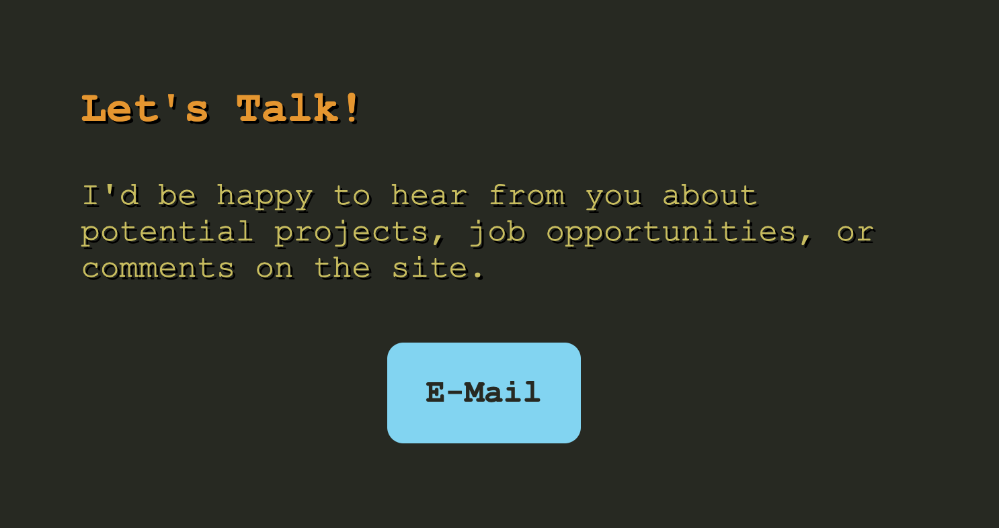

My Website
About
I won't go too in depth on for this since you're looking at it
right now but I will go in to depth on the reasoning why I made
some of my design choices.
I thought of a sales talk when making this site since both needs to
capture attention and deliver information clearly. I made sure to
keep the site clean through using minimilistic design with a small
color pallete to identify background, text, and links.
The website also has small animations for hovering buttons to make the
page more alive and fun to explore.
The original color scheme of the website was after the popular Monokai
theme so many programmers are used to seeing. I changed from this design
because it felt too dull. The dark grey background and multiple colors made
for a messy looking website I felt didn't represent me.

While it is subject to change and evolve, this site taught me a lot about
blending creative ideas with practical design. I learned that each choice I
made had hidden functions, both good and bad, and that planning before building
is crucial to a functional project.